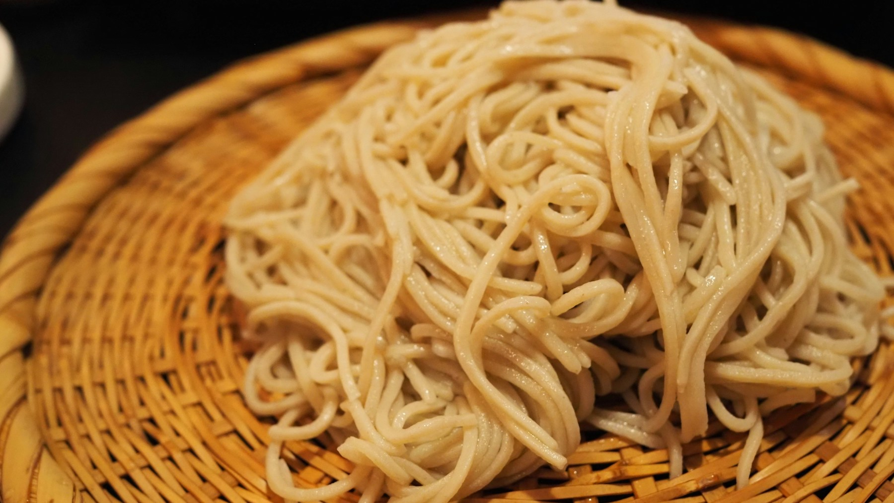
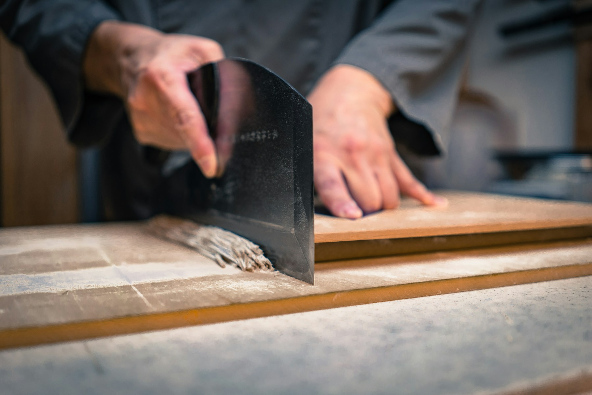
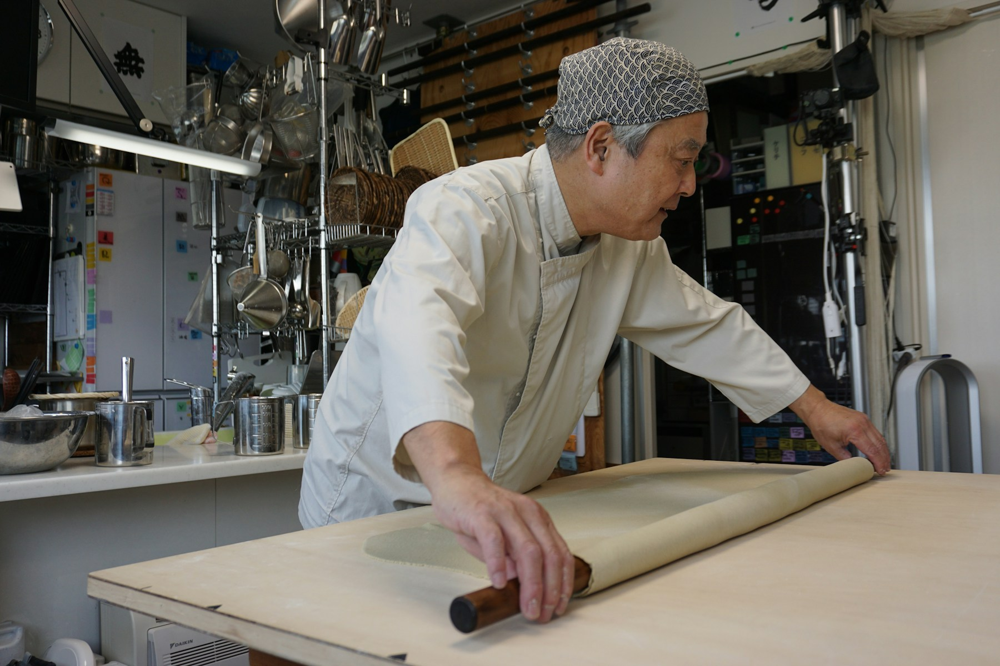
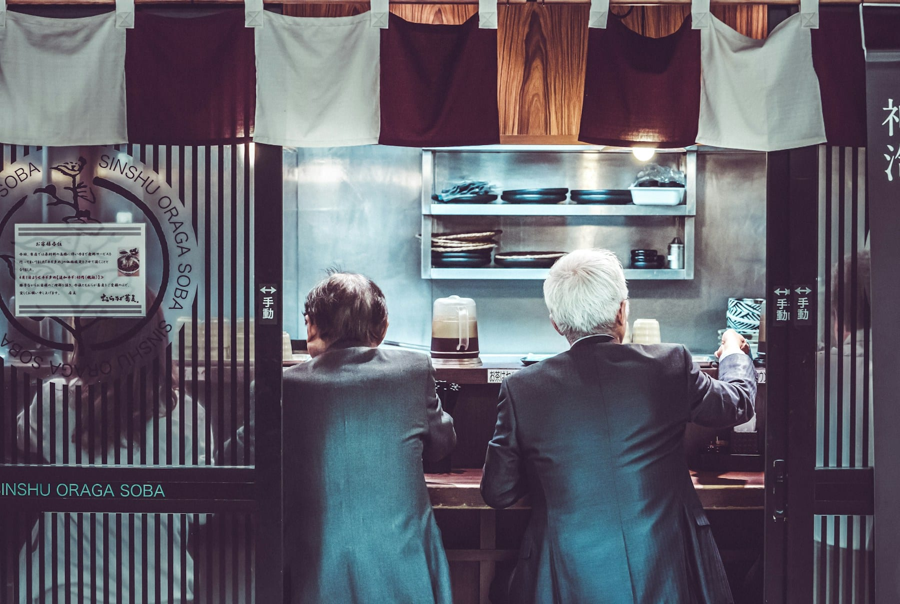

石臼の音から、
一日がはじまる。
その日に打つ分だけを毎朝挽いて、十割と二八の二通りに打ちます。昼は町の蕎麦屋、夜は蕎麦前で一杯。
もり 900円昼 11:30–15:00夜 17:30–21:00水曜休み


粉は毎朝、
その日の分だけ挽きます。
父がこの店を開いたのは昭和五十一年。石臼はそのときから同じものを使っています。一時間に挽けるのは一キロほど。朝六時に回しはじめて、昼の分を挽き終えるのは九時すぎです。
打つのは二通り。そば粉だけの十割は香りが立つかわりに切れやすく、一日二十食まで。つなぎを二割入れた二八は、のど越しで食べてもらう蕎麦です。どちらが上ということはありません。
挽きたて、打ちたて、茹でたて。父に言われたのはそれだけでした。
二代目杉野 隆
最後は、蕎麦湯で。
- ひと口目つゆをつけずに。粉の香りがいちばん分かります。
- それからつゆには先の三分の一だけ。わさびは蕎麦にのせて。
- 食べ終えたら残ったつゆを蕎麦湯で割ってください。十割の日は、とろりと濃くなります。
昼は、少しお待たせします。
席はカウンター六席と小上がり十二席。昼どきは店の前に列ができます。お急ぎの日は、十四時をすぎると入りやすくなります。
| 時間 | 平日 | 土日祝 |
|---|---|---|
| 11:30–12:00 | ほぼ待たずに | 15分ほど |
| 12:00–13:30 | 20〜30分 | 40分前後 |
| 13:30–15:00 | 10分ほど | 20分ほど |
| 夜 | ご予約が確実です | ご予約が確実です |
蕎麦がなくなりしだい、昼の営業を終えます。ご予約は夜だけ、お電話で承ります。

- 昼
- 11:30–15:00ラストオーダー 14:30・売り切れ次第終了
- 夜
- 17:30–21:00ラストオーダー 20:30・蕎麦前と〆の蕎麦
- 定休日
- 水曜日・第三木曜日
- 住所
- 東京都文京区千駄木○丁目○-○架空の住所です
- 電話
- 03-0000-0000架空の番号です
- 席
- カウンター6席・小上がり12席全席禁煙・お子さま用の取り皿あります